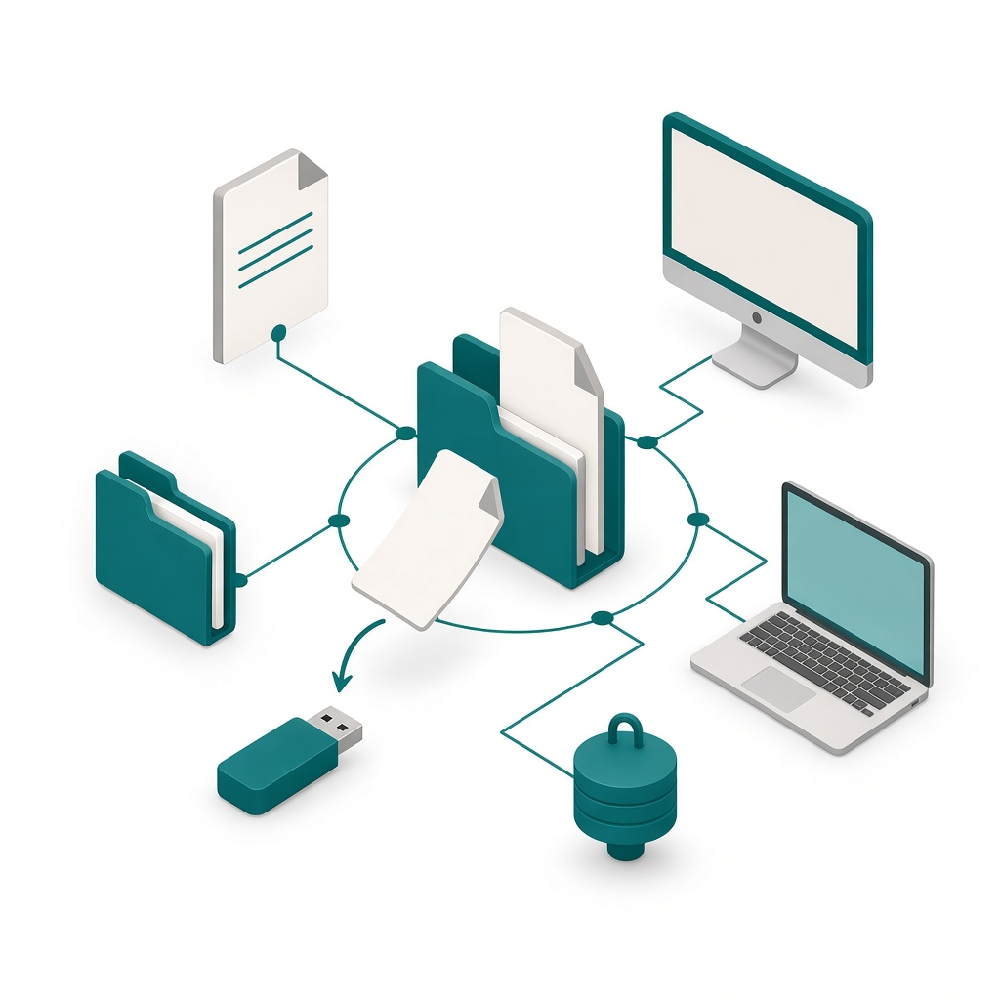

Cos'è
FileGuard sta sulle cartelle dove si tengono documenti di altre persone. Le osserva in continuo.
FileGuard monitora file e cartelle, notifica spostamenti, modifiche e cancellazioni. Dopo si vede da quale computer è avvenuta l'azione, e dove è finito, anche su unità esterne.
Le copie restano su disco, server, NAS o un cloud già in uso. Anche in doppia copia.

A cosa serve
Serve a chi tiene documenti di altre persone e deve tenere informazioni sensibili sempre sotto controllo.
Se un file viene spostato o cancellato, si vede da quale computer è avvenuta l'azione, e dove è finito. Si ripristina in un click grazie alle copie di backup.
Ogni modifica lascia una versione consultabile. Il file in uso resta com'è. La versione scelta viene messa accanto, nella stessa cartella.
In caso di controllo privacy o GDPR, FileGuard trova tutti i documenti su una persona e su un periodo specifico.

Come si usa
Un wizard guida l'installazione, in pochi minuti. Lo stesso account vale su tutti i computer.
Poi si scelgono le cartelle. Su ogni cartella si impostano fino a sei regole. La scelta vale cartella per cartella.
- Se qualcuno elimina un file, arriva l'avviso.
- Se un file viene modificato, resta la traccia e arriva l'avviso.
- Se esce dalla cartella, si vede dove è finito, anche su un'unità esterna.
- Si vede da dove è partito e dove si trova adesso, e da quale computer è partita l'azione.
- Se un file che deve stare in quella cartella non c'è, si vede.
- Se i file vanno mantenuti per un periodo di tempo limitato, FileGuard mostra da quanto restano in quella cartella e se è possibile archiviarli.
Decide chi gestisce la cartella. Il programma non cancella da solo.
FileGuard ti avvisa e traccia ogni modifica. Il dettaglio delle regole è nella pagina Funzioni.
Privacy e GDPR
FileGuard aiuta nella gestione di privacy e GDPR sulle cartelle e sui file che segue. Quando serve una risposta su un documento, la traccia c'è.
Trova tutti i documenti su una persona e su un periodo specifico. Ripercorre la storia del file: da dove è partito, dove si trova adesso, da quale computer è avvenuta l'azione.
Mostra da quanto restano in quella cartella e se è possibile archiviarli. Quanto tenerli lo decide chi gestisce la cartella. Il programma non cancella da solo.

Domande
Le copie restano sui sistemi di Egonex?
No. Le copie restano su disco, server, NAS o un cloud già in uso. Anche in doppia copia.
Se qualcuno modifica, sposta o cancella un file, FileGuard lo blocca?
No. Arriva l'avviso, e si vede da quale computer è avvenuta l'azione e dove è finito.
Si può rimettere il file al suo posto?
Sì. Si ripristina in un click grazie alle copie di backup. Se si sceglie una versione precedente, il file in uso resta com'è. La versione scelta viene messa accanto, nella stessa cartella.
Che cosa fa in un controllo privacy o GDPR?
Trova tutti i documenti su una persona e su un periodo specifico. Mostra la storia del file e da quanto è in cartella.
Chi decide per quanto tempo tenere i file?
Decide chi gestisce la cartella. Il programma non cancella da solo.
Come si installa?
Un wizard guida l'installazione, in pochi minuti. Lo stesso account vale su tutti i computer.
Il prezzo è una cifra fissa?
No. Il prezzo si compone dalle opzioni. Il calcolo arriva da un altro sistema. La prova si apre da Piani.